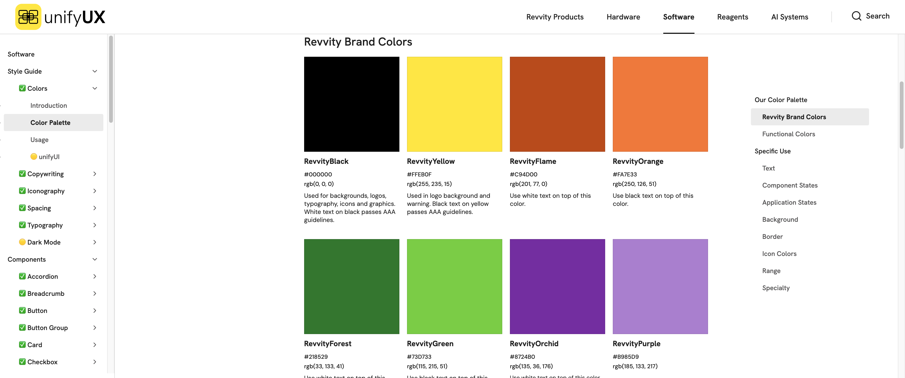
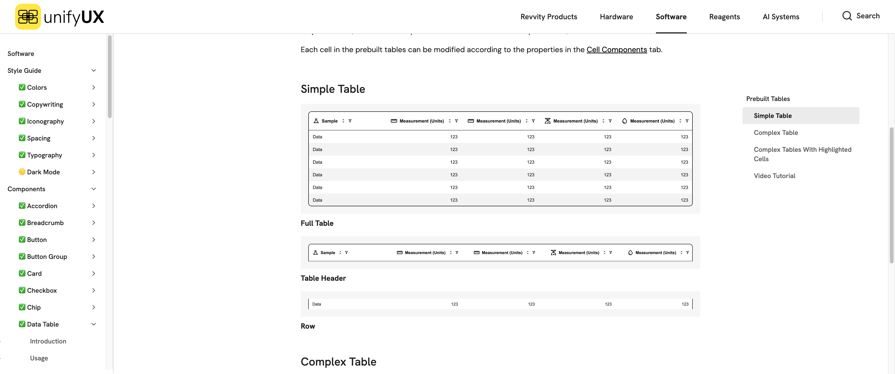

我以前也把作品集当仓库。项目背景一页、用户画像一页、Journey Map 一页、线框三页、最终稿五页，末了再压一张写着“效率提升”的大数字。材料是齐了，可我后来才回过味来——招聘者翻一份作品集，平均也就给你几十秒。我塞进去的那十几页，大半是在感动自己。
真正受罪的是读者。他得替我干完最难的那件活：从一堆漂漂亮亮的页面里，猜我到底改变了什么、凭什么是我改变的。猜不出来，他就翻下一篇了。
后来我给自己立了个挺狠的规矩，专门用来删页：如果拿掉这一页，招聘者对我的能力判断会不会变？不会变的，哪怕画得再好看，也不配赖在主叙事里占地方。
案例不是项目档案。它是一条短、还经得起查的论证：这个问题值得解决，我拍了那个关键判断，证据撑得住这个判断。三样凑齐，才算一个案例。
招聘者头三十秒，在找一张地图
一个读者点进 Signals 这个案例，他最先得搞明白的，根本不是你那个品牌渐变有多讲究。是五件事：这是科学研发的工作流；我是这条流程上唯一的产品设计师；团队还有一位 PM 和十位工程师；项目跑了大概五个月；目标是把实验到材料的追溯成本打下来。
这五句话一交代，后面那些复杂的界面截图，才算有了尺子。角色和约束不先亮出来，一张密密麻麻的系统截图，读者哪分得清——这到底是设计师主导搭起来的信息架构，还是照着需求文档一笔一笔描下来的？作品集最不该让读者干的，就是靠猜。
案例开头的“30 秒合同”
- 产品
- 它到底帮谁，干完一件多花钱、多费劲的活？
- 角色
- 我是独立扛、牵头干，还是只执行了其中一块？
- 约束
- 时间、技术、合规、老系统、组织里头的掣肘，分别是哪些？
- 改变
- 项目前后，哪条任务路径走法不一样了？
- 证据
- 后文拿什么来证明——先别急着宣布胜利。
贴满便签的那面墙，证明不了你会思考
“调研—定义—发散—交付”，这是一串流程的名字，证明不了能力。甩一张贴满便签的墙上去，最多能证明那天现场出现过便签。读者真正想扒出来的，是这种事：哪条发现，把原方案给掀了？哪个约束，让团队咬着牙放弃了那个更炫的方向？


所以过程页最好按“发现—决定—代价”这三段来写。举个例子：我们发现科学家缺的，根本不是再多几个筛选条件，是压根搞不清推荐材料到底从哪次实验来的；于是把 lineage 从打辅助的边角料，提成了对象详情里的正经模块；代价呢，是详情页密度一下子涨上来，层级得重理一遍。写成这样的过程，才搬得动，换到下一个项目照样能用。
数字越大越唬人，它量的到底是什么就越该交代
Signals 的任务测试里，一条追溯任务的时间，从大约两小时压到四十分钟，少了差不多 66%。这数字摆在作品集里，是真能镇住人——也最容易被用过头。
我是绝不会写成“设计让研发效率提升 66%”的。我们测的，就是那一条特定的追溯任务，不是科学家一整天的活；它来自一次可用性测试，谈不上长期线上的业务指标；产品最后能成，PM 拍的板、工程落的地、数据团队给的料，一样都不能少。把这些边边角角的限制老老实实写出来，项目非但没掉价，反倒说明白了一件事：我清楚自己手里的证据，到底能走多远。
千万别这么写：“通过全新 UX，企业研发效率提升 66%。”
组件全家福，谁都能拍一张
UnifyUX 这个案例，太容易讲成一堆颜色、字体加按钮。麻烦在于，任何一个稍微成熟点的设计系统，这几样都摆得出来。我的案例得证明的，是这些：团队到底为什么需要一套共同语言？是哪些对不齐的地方，正在悄悄制造成本？这套规矩，又是怎么真的一步步钻进设计和开发的协作里去的？


案例要是只停在“我做了一套 design system”，读者看见的就只是个产物。它要是能把这条链子捋出来——从几个分散产品的审计，一路到 token、组件、文档、最后工程落地——读者这回看见的，才是系统性的能力。
把最难看的那张图放进去，反而最加分
「一鱼多吃」里最漂亮的画面，是那个内容工作台。可最能证明产品判断的，偏偏是张最难看的图——失败状态：某个平台生成挂了，别的好好留着；用户看得见是哪出了问题，能只挑这一张重试。这张图摆出来，等于明摆着告诉人：我没把 AI 当成无所不能的魔法，我是认真想过它跑炸了之后怎么办的。

一个道理可以推到所有产品上：做支付的，得敢摆出被拒和退款；做权限的，得摆出“为什么这事你不让做”；做复杂 B2B 的，得摆出空数据、冲突和撤销。作品集要是永远大晴天，招聘者心里犯的嘀咕就是——这位，怕是从没熬过产品上线之后的那些坏天气。
当然，这也不是让你把案例写成一本地狱笑话合集，专门搜集各种报错。挑那么一个、最能扒开系统规则的例子就够了。让读者亲眼看见：正常流程被人打断之后，数据保没保住、责任划得清不清、用户手里还剩不剩下一步可走。
“负责 0 到 1 全流程”，这句最响，也最空
“负责从 0 到 1 全流程”，写出来确实唬人，可通常也最含糊。一个稍微上点规模的项目，不可能就你一个人从头撸到尾。更经得起推敲的写法是这样：我是这条流程上唯一的产品设计师，跟一位 PM、十位工程师搭伙干活；任务流、信息架构、交互、可用性验证，是我牵的头；技术方案、数据管道、商业上的拍板，那是对应伙伴一起扛的。
Senior 的值钱之处，从来就不在于把团队干的全收进一个“我”字里头。它体现在——你能不能把问题定义清楚、给决策搭起靠得住的依据、让一屋子不同角色，对着同一个方向，达成一个真能往下执行的共识。这几样立住了，你值多少，招聘者自己会算。
真要动手删，我按这个顺序来
我会先砍那些装样子的研究仪式，再砍重复的成品，然后是那些自己都解释不清的数据。砍完这几轮，再回头看每个项目，是不是各证一项不同的本事：Signals 证复杂关系和任务效率，UnifyUX 证跨产品的系统性，一鱼多吃证 AI 的不确定性和工作流。三个项目，要是都讲成同一个“发现痛点—做了个新界面”的套路，数量堆再多，也是原地打转。
还有些东西，案例这块小板子装不下，那就交给文章去展开——一次取舍、一回失败、一套方法。案例留紧凑，文章去铺开，两边互相链着。读者这么一路看下来，撞见的就不再是一个摆满成品的静态仓库，而是这个人，是怎么一步步长出判断来的。
15 分钟作品集证据审计
- 给每一页写一句“它证明我具备什么能力”。写不出就先隐藏。
- 圈出所有百分比，补上测量对象、方法和边界。
- 为每个项目找一张失败状态或被放弃方案。
- 把“我们”和“我”重新标注，写清协作对象与责任。
- 检查三个项目是否在证明三种不同能力。
- 让不了解项目的人只看标题和图注，复述你的因果链。